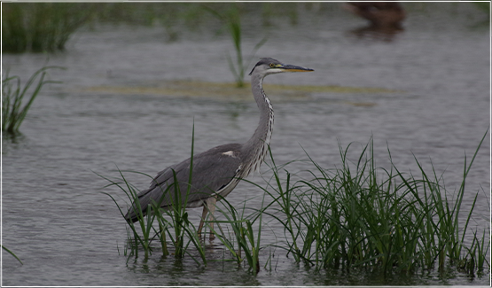
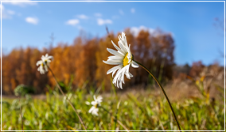

— Зубр.
Приокско-Террасный заповедник
Эталон природы Южного Подмосковья
— Зубр.
Посетить заповедник
Режим работы и стоимость
посещения смотрите по ссылке,
маршрут проезда по ссылке.
посещения смотрите по ссылке,
маршрут проезда по ссылке.
Усыновить зубра
Зубрам нужна Ваша забота.
Любой человек, семья, группа
друзей или организация может
усыновить «царя быков».
Любой человек, семья, группа
друзей или организация может
усыновить «царя быков».
Стать волонтером
Заповеднику необходимы
бескорыстная помощь, умелые руки
и добрые сердца тех, кто любит
природу и желает плодотворно
поработать для сохранения ее красоты.
бескорыстная помощь, умелые руки
и добрые сердца тех, кто любит
природу и желает плодотворно
поработать для сохранения ее красоты.
Интересные факты о Заповеднике
Приокско-Террасный государственный природный биосферный заповедник расположен на левом берегу Оки, в границах городского округа Серпухов.
Природный комплекс находится всего в 100 километрах от Красной площади и является одним из самых небольших заповедников в России. При этом он остается одним из самых экологически чистых мест в Подмосковье. Единственный природный заповедник на территории столичного региона входит во Всемирную сеть биосферных резерватов ЮНЕСКО.
Особо охраняемая природная территория открывает широкие возможности для любителей экологического туризма. Всего час езды на автомобиле от МКАД по асфальтированной дороге, и перед жителями шумного мегаполиса раскрывается уникальная палитра растительного и животного мира.


Как попасть в Заповедник?
Добраться до заповедника можно, как на общественном транспорте (автобус), так и на личном автомобиле. Удобное расположение в 80 километрах от МКАДа, качественное асфальтовое покрытие, позволяет приехать в заповедник в любое время года, невзирая на погодные условия.
Основная часть пути со стороны Москвы пролегает по федеральной автомагистрали М-2 Крым. Через 77 километров от МКАД нужно свернуть направо по указателю «Серпухов/Данки» и двигаться около 5 километров по асфальтированной дороге до вывески «Приокско-Террасный заповедник».
1.
Электричкой от Курского вокзала до станции Серпухов, дальше пригородным автобусом до
остановки
«Заповедник»;
2. Автобусом по маршруту от станции метро «Лесопарковая» до станции Серпухов, дальше
пригородным
автобусом до остановки «Заповедник».
Новости
15.02.2021
Выставка открыта и ждет гостей!
В субботу 13 февраля в Москве на базе Культурного центра ЗИЛ, состоялось открытие первого научно-популярного фестиваля «Ускользающий мир».
15.02.2021
Каникулы в заповеднике
25 февраля в визит-центре ФГБУ «Приокско-Террасный государственный заповедник» было организовано эколого-просветительское мероприятие для воспитанников Серпуховского (районного) и Серпуховского городского социально-реабилитационных центров для несовершеннолетних.
15.02.2021
Символ года — гордость века
Наступил февраль и уже не так далеко до начала пожароопасного сезона, который в Московской области часто наступает сразу после схода снежного покрова.
15.02.2021
Ждём экскурсоводов

В прошедшие выходные, 6 и 7 февраля, в Приокско-Террасном заповеднике состоялся Зимний маршрутный следовой учёт (ЗМУ).
15.02.2021
Лесопожарное формирование заповедника
В субботу 13 февраля в Москве на базе Культурного центра ЗИЛ, состоялось открытие первого научно-популярного фестиваля «Ускользающий мир».
15.02.2021
Зверя по следам любого...
25 февраля в визит-центре ФГБУ «Приокско-Террасный государственный заповедник» было организовано эколого-просветительское мероприятие для воспитанников Серпуховского (районного) и Серпуховского городского социально-реабилитационных центров для несовершеннолетних.
ВОЛОНТЁРСТВО
Как показывает практика, совместный добровольный труд
объединяет
лучше, чем корпоративные праздники.
ТУРИЗМ И ОТДЫХ
Посещение Приокско-Террасного заповедника – отличный вариант
для
организации семейного и корпоративного отдыха в Подмосковье.
ОПЕКУНСТВО
Эколого-просветительская деятельность не дублирует работу
органов
народного образования. Ее главная цель — обеспечить максимально широкую поддержку идеи
бережного
отношения к окружающей среде.
ФОТОГАЛЕРЕЯ
Посещение Приокско-Террасного заповедника – отличный вариант
для
организации семейного и корпоративного отдыха в Подмосковье.
Партнёры
Заповедник выражает признательность партнерам и готов к сотрудничеству со
всеми заинтересованными организациями и гражданами.